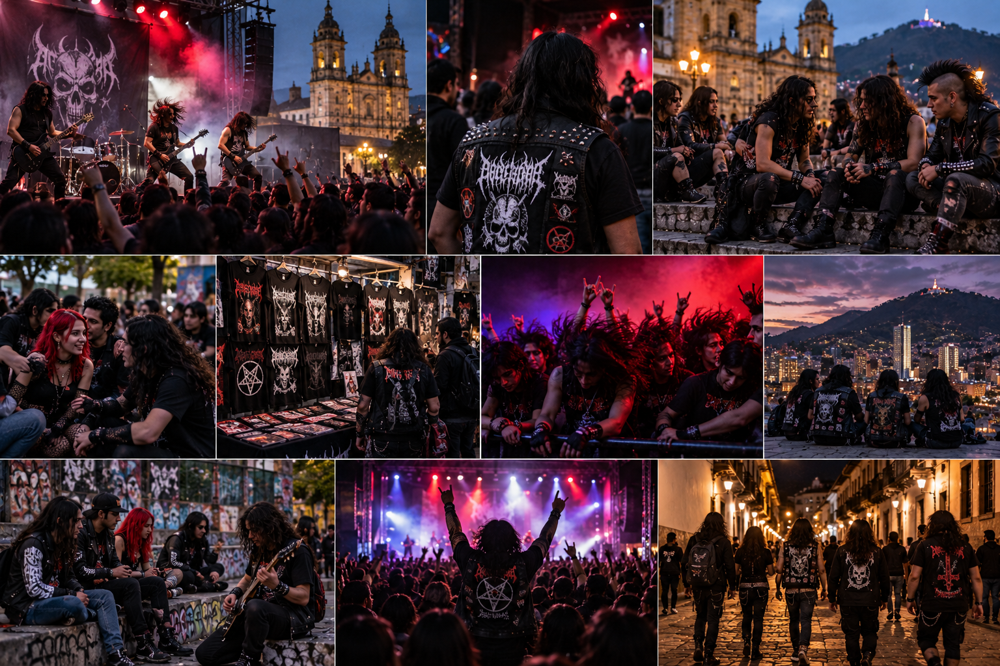

Cultura rock y metal
Durante diferentes décadas, el rock y el metal han formado parte de las culturas musicales presentes en Bogotá. Estos géneros reunieron a grupos de jóvenes que compartían gustos musicales, formas de vestir y espacios de encuentro.
Las bandas, conciertos y establecimientos dedicados a estos géneros permitieron crear comunidades alrededor de la música. La ropa oscura, las camisetas de bandas y otros elementos visuales también se convirtieron en formas de expresión.
Aunque las tendencias musicales cambian con las generaciones, estos estilos continúan formando parte de diferentes grupos sociales y de la historia musical de la ciudad.
Puedes encontrar esta cultura en conciertos, festivales, bares y espacios musicales donde se reúnen seguidores de estos géneros.